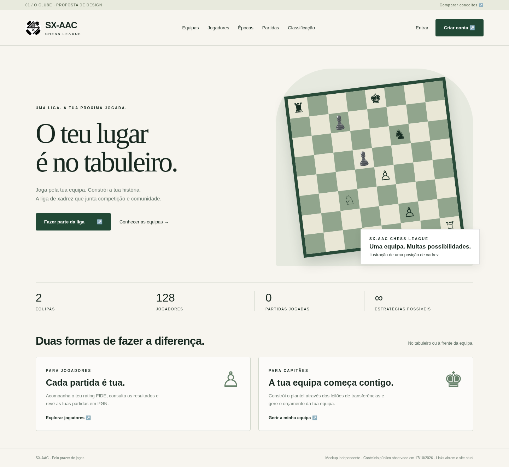
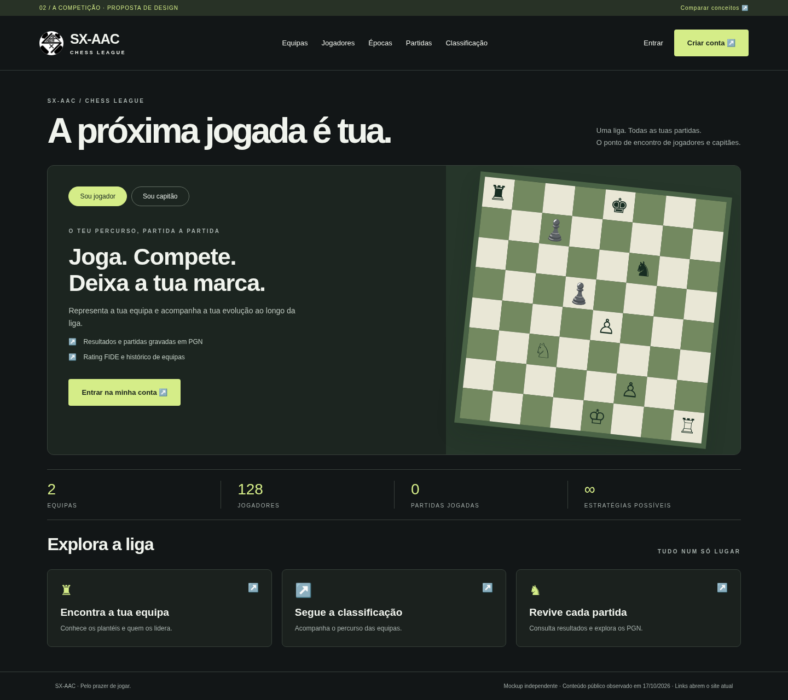

01 / O Clube
Uma entrada acolhedora na liga. Identidade editorial, foco na comunidade e na participação.
Explorar mockup ↗︎Mockups navegáveis e adaptados a computador e telemóvel.

Uma entrada acolhedora na liga. Identidade editorial, foco na comunidade e na participação.
Explorar mockup ↗︎
Uma experiência mais direta. Navegação por perfil e acesso rápido a equipas, classificações e partidas.
Explorar mockup ↗︎Propostas independentes, sem alterações ao site original. Logótipo e informação pública do site SX-AAC, consultado em 17/10/2026. As contagens são uma fotografia dessa consulta; não são dados em tempo real. As posições de xadrez são ilustrativas. Os links de conta e competição abrem o site original.